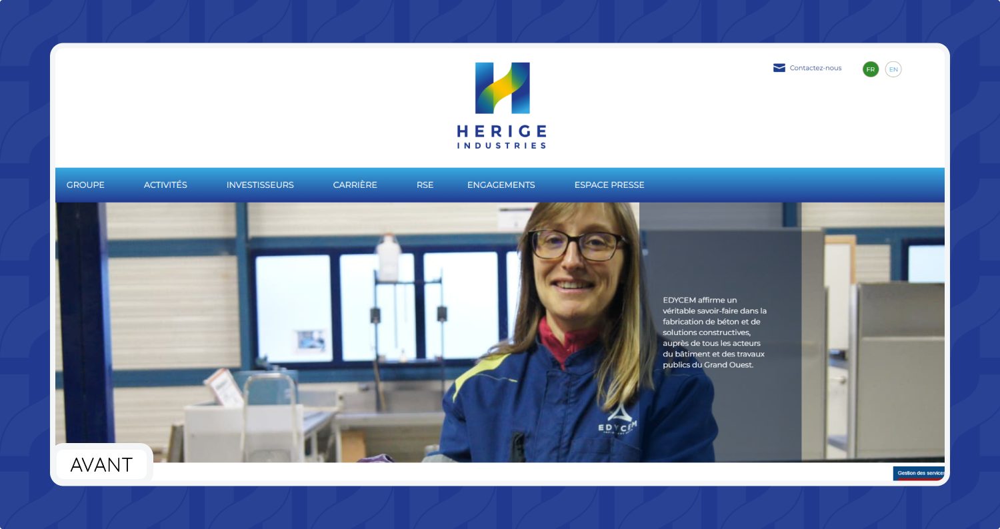
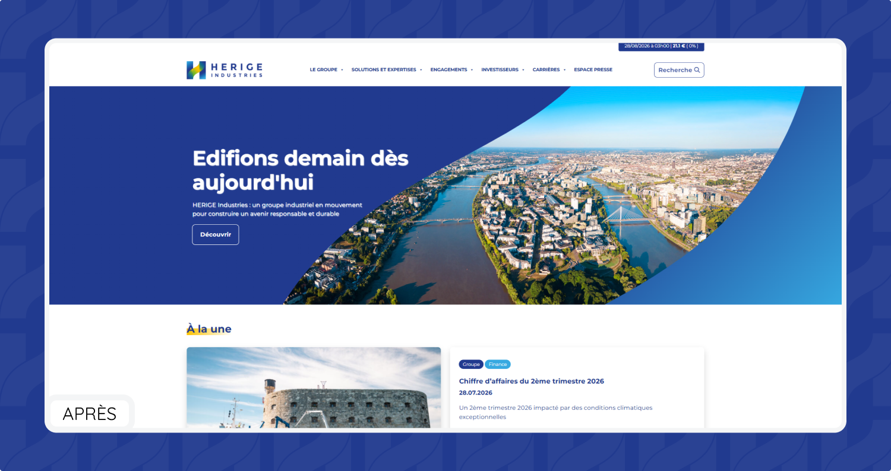

HERIGE Industries
HERIGE Industries est un groupe industriel français spécialisé dans l’univers du bâtiment. Créé en 1908 en Vendée, le groupe s’appuie aujourd’hui sur plus de 1 600 collaborateurs et plusieurs expertises industrielles.
Voir le siteType
Site vitrine
Rôle
UX/UI Designer
Outils utilisés
Figma

objectifs
L'objectif de cette refonte était de moderniser l'image d’HERIGE Industries en repensant entièrement l’interface de son site web.
L’ancien site ne reflétait plus l’identité actuelle du groupe et nécessitait une mise à jour à la fois visuelle, structurelle et ergonomique. L’objectif était de créer un site plus moderne et cohérent, tout en assurant une véritable continuité avec la nouvelle charte graphique d’HERIGE Industries.
Moderniser l’interface et donner une image plus actuelle du groupe
Décliner la nouvelle identité visuelle sur l’ensemble du site.
Faciliter la navigation et l’accès aux différentes informations.
Améliorer la lisibilité et la hiérarchisation des contenus.


Processus
Conception UX/UI
J’ai commencé la refonte par la page d’accueil, pensée comme le point de départ de la nouvelle identité digitale d’HERIGE Industries.
L’objectif était de créer une interface aérée, épurée et moderne, tout en restant fidèle aux codes de la nouvelle charte graphique. J’ai donc repris plusieurs éléments existants pour les traduire dans l’univers digital et créer une identité visuelle cohérente.
J’ai notamment utilisé le dégradé de bleus de la charte pour structurer les différents fonds et mettre en valeur les contenus. Les photographies viennent apporter de la profondeur et de l’humain à l’interface.
Un travail autour du « H » d’HERIGE m’a également permis d’intégrer les images de manière plus graphique, en utilisant ses lignes et sa géométrie comme éléments de composition.
Pour les titres et certains éléments d’accentuation, j’ai intégré des touches de jaune, en écho aux couleurs du logo. Cela permet d’apporter du contraste et de dynamiser une interface principalement construite autour des nuances de bleu.
Enfin, j’ai utilisé la police Montserrat, typographie recommandée dans la charte graphique, afin d’assurer une continuité entre l’identité de marque et son expression digitale.
Une fois le design de la page d’accueil validée, j’ai décliné ces principes sur les différentes pages du site. L’objectif était de conserver une cohérence visuelle tout au long de la navigation, tout en adaptant la mise en page aux différents types de contenus.


Impact
Une identité renouvelée, une expérience plus claire.
Cette refonte a permis de faire évoluer le site d’HERIGE Industries vers une expérience digitale plus contemporaine et cohérente avec son identité actuelle.
Le travail de design a permis de transformer les codes de la charte graphique en un véritable univers digital, tout en améliorant la lisibilité et la hiérarchisation des contenus.
Le nouveau site propose ainsi une expérience plus claire, aérée et intuitive, avec une identité visuelle affirmée qui permet de mieux refléter l’image et les valeurs actuelles du groupe.